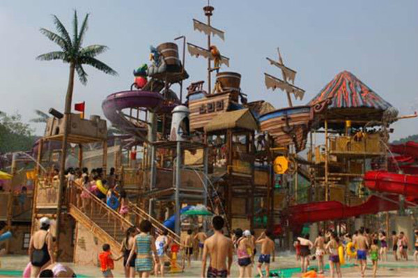
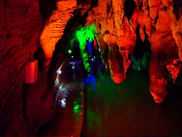

南岸区
位于重庆市主城区，位于重庆长江南岸，依山傍
水，仰拥“山城花冠”南山，俯临长江、嘉陵两江，山
水园林特色显著，风景秀丽优美宜人。东经106°3′14
″～;106°47′106°3′14″～ 106°47′2″，北纬29°27′2″～
29°37′2″之间
辖区西部、北部濒临长江，与九龙坡区、渝中区
江北区、渝北区隔江相望，东部、南部与巴南区接壤
全区幅员面积265平方公里，其中，常用耕地面积4640
公顷，森林面积7000余公顷，森林
覆盖率28.2%。
|
|  |
重庆加勒比海水世界位于国家4A级景区——重庆南山旅游核心地，分为室内、外主题水乐园两部分。加勒比海水世界一年四季洋溢着刺激与欢乐、温馨与浪漫的加勒比海水世界，在这里能感受到墨西哥海湾的冲浪乐趣，体验龙卷风暴、魔力碗的冒险刺激，领略各式水上滑道的热情欢乐。置身于灿烂的阳光、碧蓝的海水、洁白的沙滩、婆娑的棕榈树、迷人的比基尼之中，在精致的风情美食、特色的主题商品相伴下 |
 |
南山植物园坐落在省级南山风景名胜区群山之中，最高海拔681米，面积8000多亩。与重庆主城区夹长江面峙，是一个以森林为基础，花卉为特色的综合性公园。 重庆南山植物园重庆城边有这样一个美妙去处：它优雅而清幽，远离喧嚣与繁杂；它山峦起伏，环秀而不失端庄；它树林阴翳、花草争芳，更可称为秀丽。 驻足此处，远望青山滴翠，雾海迷蒙，气象万千；近视则水流潺潺，花木繁盛，百草滋荣。置身其中 |
|  |
介绍 老龙洞在利城西北2．3公里，清江北岸四方店山麓，上、中、下三洞一水相联，如银练串珠。上洞高7米，宽6米。中洞高1米，宽2米。下洞高3米，宽4米。清冽甘泉自上洞出，弧行约100米后人中洞，穿山伏流，从下洞口奔出，在苍翠欲滴的笔架山麓迂回流连约1公里后，注入八百里澄碧清江。 传说古时天旱为洞中老龙作怪，巫端公设坛洞口，作法洞中与老龙斗，入洞前嘱其弟子，见洞口草鞋打架，即为与老龙搏斗情景 |
|